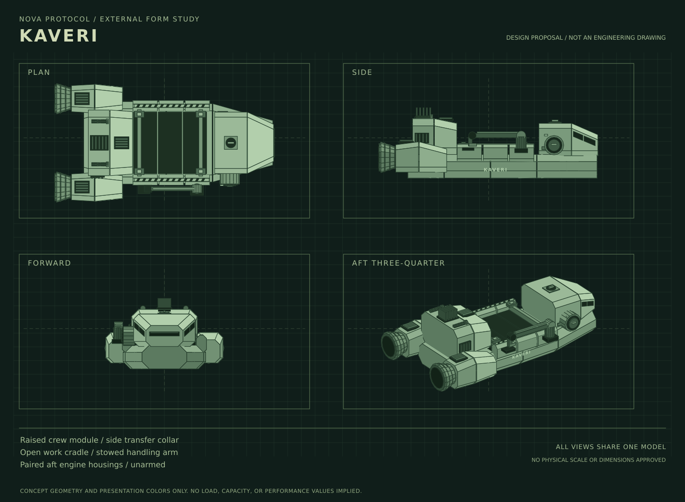

Lore / Kaveri
Kaveri
Nova Protocol / Ships
| Type | Civilian workship |
|---|---|
| Operator | Clearwell Waterworks |
| Regular port | Baikal |
| Captain | Jonah Mercer |
| Crew | Five cross-trained civilians |
Kaveri is a workship operated by Clearwell Waterworks from Baikal. Its work includes maintenance, recovery, and small cargo jobs. Like ordinary civilian and industrial ships, it is unarmed.
{kind=link}

Work and crew
The ship is a working tool and a shared workplace, not the captain's personal property. Jonah Mercer is an established employee who knows the work and is responsible for the people aboard.
- Leila Haddad: chief engineer.
- Tomas Vega: pilot and navigator.
- Rina Okafor: work operations lead.
- Samir Bell: systems technician and first-aider.
All five are cross-trained. Their responsibilities meet in the operation of one ship, from planning an approach to making its arrival useful to the people waiting at the destination.
Name
Kaveri takes its name from an Earth river, following Clearwell's ship-naming tradition. Ebro, the company's water hauler, belongs to the same family of names.